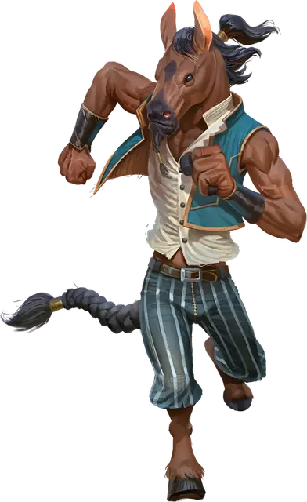

Гардинал эквинал
Equinal Guardinal
Большой Небожитель, нейтрально-добрый

Класс Доспеха 15 (природный доспех)
Хиты 93 (11к10 + 33)
Скорость 50 футов
| мод | спас | ||
|---|---|---|---|
| СИЛ | 23 | +6 | +9 |
| ЛОВ | 16 | +3 | +3 |
| ТЕЛ | 17 | +3 | +6 |
| мод | спас | ||
|---|---|---|---|
| ИНТ | 15 | +2 | +2 |
| МДР | 14 | +2 | +2 |
| ХАР | 12 | +1 | +1 |
Навыки Атлетика +9, Восприятие +5, Религия +5
Сопротивление урону излучение
Иммунитет к состояниям испуг, очарование
Чувства пассивное Восприятие 15
Языки Общий, Небесный
Опасность 6 (2300 опыта)
Бонус мастерства +3
Особенности
Лобовая атака. Если эквинал переместится как минимум на 30 футов по прямой к цели, останавливаясь в пределах 5 футов от цели, оно должно преуспеть в спасброске Силы Сл 17, иначе получит 14 (4к6) дробящего урона и упадёт ничком.
Действия
Мультиатака. Эквинал совершает две атаки Кулаком.
Кулак. . Рукопашная атака оружием: +9 к попаданию, досягаемость 5 футов, одна цель. Попадание: 13 (2к6+6) дробящего урона плюс 3 (1к6) урона излучением.
Камень. . Дальнобойная атака оружием: +9 к попаданию, дистанция 60/180 футов, одна цель. Попадание: 22 (3к10+6) дробящего урона. Если целью является существо, оно должно преуспеть в спасброске Силы Сл 17, иначе упадёт ничком.
Крик (перезарядка 6). Эквинал издает громовой крик. Каждое существо в пределах 30 футов от эквинала должно преуспеть в спасброске Телосложения Сл 14, иначе станет ошеломленным до конца следующего хода эквинала.
Описание
Лошадеподобные эквиналы - одни из самых сильных гвардиалов. У эквиналов удлиненные морды и гривы с пучками, а их мощные, изогнутые ноги несут их на большие расстояния. Эти добродушные, неистовые Небожители хвастаются своей мощью в состязаниях на выносливость и редко отступают перед вызовами. Крепкие и отважные, они используют свои закалённые, как сталь, кулаки, чтобы в пух и прах уничтожить зло. Эквиналы также могут издавать могучий крик, останавливающий их врагов на полпути.
Гардиналы
Кочевые и миролюбивые, гардиналы - это животные Небожители, родом из Элизиума. Гардинал напоминают гуманоидов со звериными чертами. В своем повседневном общении гардиналы воплощают красоту, спокойствие и праведность своего родного плана. Гардиналов можно найти на всех Внешних землях, особенно в Экстазии, портальном городе Элизиума, и в Фаунеле, портальном городе Звериных земель.
В то время как гардиналы обычно дружелюбны и не склонны к гневу, их сверхъестественная добродетель ставит их в противоборство со злыми существами Нижних планов. Гардиналы ненавидят зло и без колебаний выступают против несправедливости и злодейства, полные решимости искоренить силы, угрожающие красоте и миру.